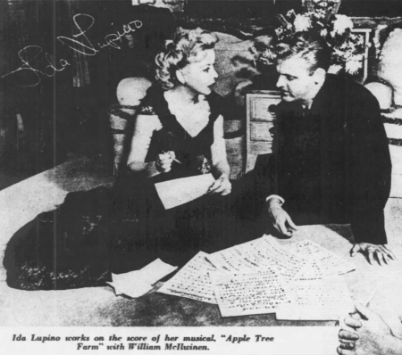
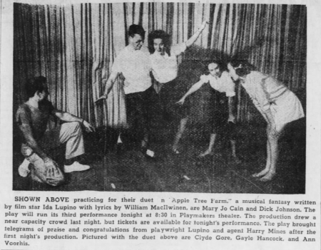

Recently I uncovered some fascinating information on a forgotten aspect of Ida Lupino's multi-faceted career. Aside from her well-known contributions as a film and television actor, writer, producer, and director, she also co-authored a musical comedy that was produced on stage in 1949.
The stage production was the revelation, since it appears to have gone down a memory black hole. I have not seen such a production mentioned in any of the books and articles I have read about Ida over the last few years, even those by her biographers.
Ida Lupino had serious ambitions to write and produce a stage musical comedy, and she had worked quite a bit in that direction in the 1930s and '40s in her spare time. So it is pleasing to discover that this ambition of hers was realized, adding another item to long list of her show business accomplishments.
My presumption that none of Ida's stage musical works had been produced was based in part on a 2014 article by MoMA associate curator Anne Morra — an informative article about a script of Apple Tree Farm that MoMA had recently acquired. At the end, Morra relates that "Apple Tree Farm was never realized as a stage or screen musical".
From my own readings, I knew Apple Tree Farm was the play that Ida was most determined to see produced. She had taken time off from acting and spent several months of 1946 — near the height of her Hollywood stardom — with the lofty ambition of getting it to Broadway.
This play was something she clearly cared deeply about. Ida's late father Stanley had written the original book, and there was no one Ida was more determined to please than him. Her attempt to adapt Stanley's book, write a score, and produce the play may have been a way to honor him after his early death in 1942. Morra mentions that Stanley's script of Apple Tree Farm was the only script that Ida retained to the end of her life.
Ida Lupino's push to make Apple Tree Farm a reality on the stage may have begun in 1943, the year after her father's death. Late that year, an item in Photoplay magazine relates, "Ida, by the way, is working hard on that musical comedy (she wrote all the music for it) she expects to stage very soon. Producer Lupino! Not bad." This item is consistent with Apple Tree Farm, though there is a chance it could be something else — she dabbled in music constantly at that time.
Events in Ida's personal life likely distracted her soon after that. Her husband, Louis Hayward, returned from the South Pacific a war hero, but devastated by his experiences. Helping him recover, then dealing with the break-up of their marriage in subsequent months took virtually all her energy.
Apple Tree Farm doesn't re-emerge as a public priority for Ida until she was working on the film Escape Me Never with Errol Flynn in late 1945 and early '46. At that time, she energetically resumed work on the musical comedy. The press reported that she had written music and lyrics for five numbers and was aiming for it to be on Broadway in the fall.
Around this same time, she had invited several men and women to share her household due to the post-war housing shortage. One of these, a war veteran named Bill MacIlwinen, was a talented musician, and in him, Ida found a willing and able collaborator on Apple Tree Farm.
In a March 9 column, Hedda Hopper wrote that Ida was taking a three-month leave-of-absence from making pictures at Warner Bros. in order to work on Apple Tree Farm. She would "adapt it for American audiences and to collaborate on the score with an ex-soldier". Ida planned to have a cast of "unknowns" and to do a tryout on the west coast before taking it to Broadway.
A week later, another Hollywood columnist said Ida was "working like mad" with Bill MacIlwinen. They were expecting to finish in late April, after which they would go to New York City to sell it to Broadway. Late in March, Louella Parsons wrote that "Warners have taken an option on Ida Lupino's musical, Apple Tree Farm, for a movie. It's all ready for its Santa Barbara tryout."
Next, the Hollywood press reported that "Ida has signed radio comedian Jackson McCarthy to play in it," and that she and MacIlwinen had fourteen musical numbers written for the play. Singer Tony Martin was said to be ready to try out a couple of the songs on his radio show. (I would be fascinated to know if this actually happened.)
So as of April 1946, Apple Tree Farm appeared to be on track for a production in Santa Barbara in the near future. Ida and Bill were proud of their work, as columnist Erskine Johnson discovered while vising the "Lupino Asylum", as Ida referred to her household, on "a rather dull afternoon", with only 10 or 12 people there.
"I want you to meet Bill MacIlwinen," Ida said. "He was a lieutenant in the Navy. Now we're collaborating on a Broadway musical — 'Apple Tree Farm'. Bill is writing the music, and I'm writing the lyrics. Listen! — he's playing the piano in the living room now."
We listened. Bill was an excellent pianist.
...
"You must hear some of our songs from 'Apple Tree Farm'," Ida said. We all rushed into the living room. Bill played and Ida sang.
"My sister's husband is designing the hats for the show," Ida said, after singing four numbers.
Next on the agenda was Ida's New York sales trip, scheduled for May 7.
Then something happened — at the last minute, Ida Lupino postponed her trip.
The reported reason for the cancellation was a "serious throat ailment". Soon, columnist Edwin Schallert expressed doubt that Apple Tree Farm would go further any time soon, as Ida was going to be too busy with film work. One of the films Schallert mentioned for Ida never happened, while the other, Deep Valley, didn't end up going before the cameras for four months.
On June 4, columnist Harrison Carroll reported, "Ida Lupino will do a complete re-write on the book of her musical Apple Tree Farm. She plans to publish several songs in the meantime."
At that point, at least in the press, Apple Tree Farm goes dark.
Six months later, by which time Ida Lupino was starring in Deep Valley, a United Press article about the madhouse of assorted people at Ida's home quotes her saying she is working on a musical for which "the play was written by my father." Signs of life? Or old news?
Another eighteen months — then, in April 1948, a Chicago Tribune layout on Ida includes an undated photograph of her working with Bill MacIlwinen on Apple Tree Farm. Again, is this signs of life or an old picture?
By late 1948, Ida had married Collier Young, and her household reverted to that of a traditional couple — no longer a motley assortment of people coming and going. Soon, she and Young would be writing and producing their own movies. The time for a stage production of Apple Tree Farm had come and gone — or so I would have thought.
But then, on January 28, 1949, just a few days after Ida announced her plans to produce a film about unwed mothers for her independent company — the film that became Not Wanted and launched her celebrated directing career — an item appears in the Raleigh News and Observer with the headline "Ida Lupino's Play Will Be Presented":
Chapel Hill, Jan. 27 — "Apple Tree Farm", an original play by Stanley and Ida Lupino of Hollywood, with music by Bill McIlwinnen [sic] of Fayetteville, will go into production next week on the University of North Carolina campus.
The modern musical fantasy will be given here April 4, 5, 6, under the sponsorship of the Laboratory theatre of the Carolina Playmakers for the benefit of the Koch Memorial Fund.
Martin Jacobs of Greensboro, who staged last year's first Memorial Fund show, "Sweep It Clean," will again be director.
Miss Lupino, the famous movie star, has indicated she expects to attend the performance in Chapel Hill.
Amazing news!
As I examined the newspaper archives from North Carolina as the April production date approached, I was concerned. Did this actually happen? Did something arise to prevent it?
But nothing got in the way — it actually happened! The original planned run of three nights was extended to five: April 4-8, 1949.
Ida was unable to attend the performance due to her duties on her film, Not Wanted, which now included directing due to the illness of the assigned director, Elmer Clifton. She did do an interview on a CBS coast-to-coast broadcast the day before the premiere in North Carolina. And she and her friend Harry Mines sent telegrams of congratulations to the cast after the first night's performance. The reviews in the local newspapers were disappointed with the book, but enthusiastic about the music and songs.
Ida was not yet done with Apple Tree Farm. At the time of the North Carolina production, she was reported to be planning a meeting with 20th Century-Fox about a script of Apple Tree Farm. A few months later, when Ida was acting in the film Woman in Hiding, working with director Michael Gordon, this item appeared in papers: "Miss Lupino owns a property she'd like to see staged, and Gordon, a Broadway veteran, is, she sighs, the man to stage it." What else could that be but Apple Tree Farm? Ida clearly did not relinquish her Broadway dreams easily.
The next month, Ida told a North Carolina reporter that she'd like to visit the state in near future to visit friends, including Bill MacIlwinen. "I'm still quite elated over Bill's and my collaboration on the musical comedy, The Apple Tree Farm, which the Carolina Playmakers produced this spring. Maybe we'll do another."
And then Apple Tree Farm really does go dark — eventually falling into that memory black hole.
Morra's article suggests that Ida worked on a screenplay version in the 1950s. By that point, Ida was heavily into film producing, directing, and writing. As her Broadway initiative kept hitting dead ends, it makes sense that she would decide to produce it herself in the medium she was expert at and had some control over. She had so many other projects going, though, that Apple Tree Farm does not seem to have gotten much attention at that point, even from her.
As the years passed, Ida Lupino retained the script of Apple Tree Farm — alone amongst the numerous ones that she had collaborated on through her decades in Hollywood. It was, after all, one her father had given her.

Wow! This article is impressive. You have researched this in detail. I wonder if Ida Lupino just lost a bit of interest in the musical as she became very involved with other things and as her father’s death reversed into the more distant past. The weak reviews the book got probably didn’t help much either. I wonder where the actual script is today.
Posted by: Arch Bryant | May 27, 2020 at 07:03 PM
Great work! Adding even more to our appreciation of a remarkable woman.
Posted by: Allison Burnett | Feb 04, 2021 at 08:54 AM